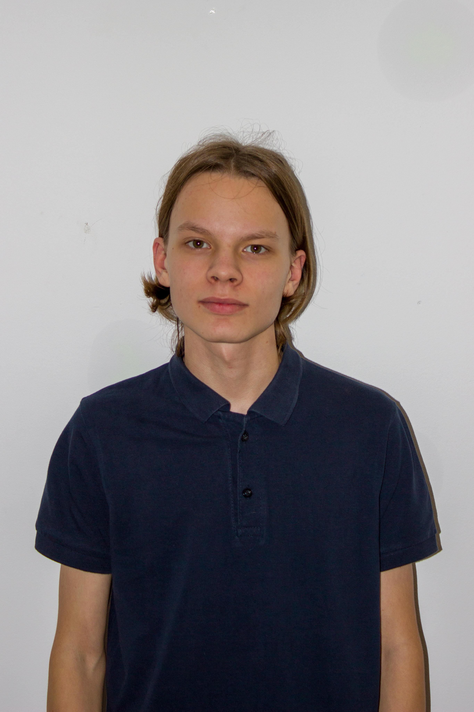
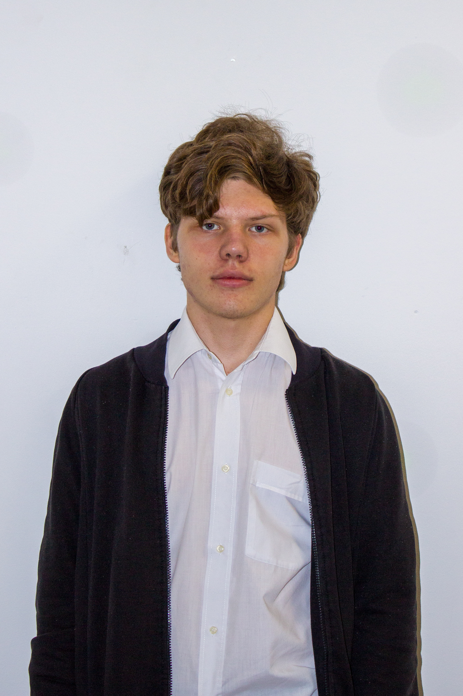
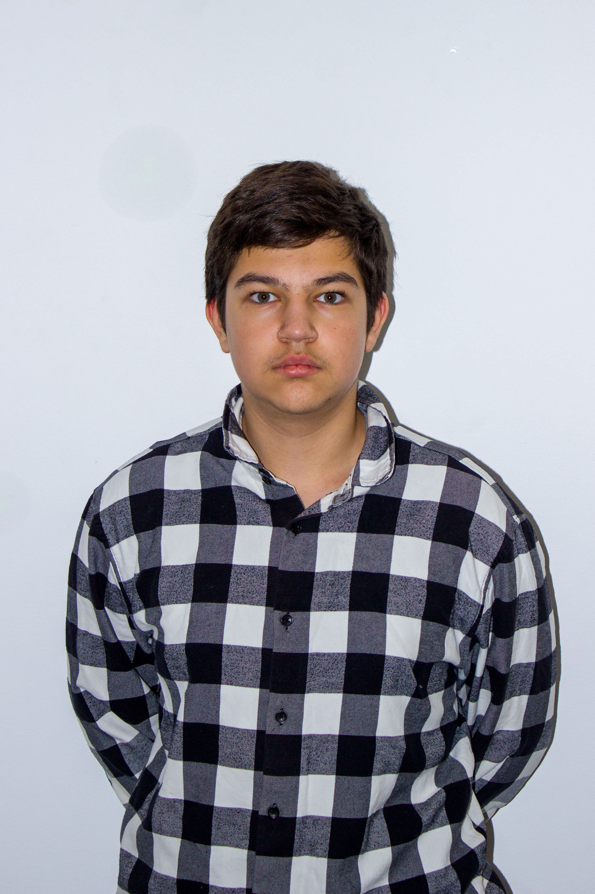
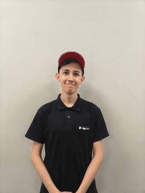
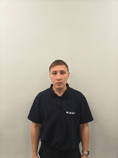

Автономная мобильная платформа для производственной логистики
Полноприводный робот 4WD со всенаправленными колёсами, компьютерным зрением OpenCV, управлением по сети Wi-Fi (SSH) и резервным радиоканалом Meshtastic для автоматической доставки грузов.

Проблема
Высокие затраты на ручную транспортировку мелких партий и избыточность тяжелых тягачей
1. Суть проблемы
Ручная доставка деталей и плат между рабочими постами отвлекает персонал и тормозит линию.
2. Эффект GreenTech
Переход от тягачей (1 500 Вт) к легкой платформе (40 Вт) снижает расход энергии в 35 раз.
3. Отрасль и партнеры
Приборостроение, электроника и сборочные линии (включая ПГ «Метран»).
4. Масштаб потерь
ФОТ курьера: 660–780 тыс. руб. в год. Потери от простоев постов: 120–180 тыс. руб. в год.
5. Минусы аналогов
Складские AGV стоят 1 400–3 500 тыс. руб., требуют широких проходов и вызова инженеров.
6. Прогноз на 1–10 лет
Дефицит кадров вырастет на 25–40%, производству нужны доступные роботы, работающие в рое.
Решение
Продукт: Автономная мобильная платформа 4WD со стереозрением OpenCV и работой в рое
1. Описание продукта и объем решения
Автономная мобильная платформа на 100% заменяет ручную доставку деталей между постами и объединяется в рой для работы с манипулятором.
2. Колёса Илона Маска (Mecanum)
Ролики под углом 45° дают движение боком, по диагонали и разворот на месте на 360° без радиуса разворота для точной парковки к линии.
3. Ключевые характеристики
Масса 4 кг, тяга 6 Н, 4 мотора NEMA 17 и драйверы TMC2209 (350–600 об/мин при 12–24 В), мощность 40 Вт, время работы 30–45 мин.
4. Навигация и быстрое внедрение
Стереокамера OpenCV, лидар 360°, 4 сонара HC-SR04 и гироскоп MPU-6050. Запуск за 1 день, настройка маршрута в приложении за 5 мин.
Уникальность/инновационность технологии
Связь по Wi-Fi (SSH) с резервом через Meshtastic, модульный ремонт за 15 мин и работа в рое
1. Связь роя и резервный канал Meshtastic
Управление идет по Wi-Fi (SSH). При сбоях связи платформа автоматически переходит на радиоканал Meshtastic (в перспективе — на более скоростной канал).
2. Аппаратная база и модульность
Связка Raspberry Pi 5 (OpenCV) и STM32 (микрошаг 1/16, ток 600 мА, нагрев 40 °C). Шасси из PETG имеет 10-кратный запас прочности (38 МПа при 4 МПа).
3. Интеллектуальная собственность
Патент на стадии оформления. Разработаны собственная архитектура управления, приложение настройки маршрутов, 3D-модели и схема платы питания.
4. Ресурсы для доработки
Бюджет ограничен возможностями нашей учебной организации и накоплениями участников со школьных обедов. Прототип полностью собран своими силами.
Эффекты от внедрения
Снижение стоимости внедрения в 35–60 раз и окупаемость одной платформы менее 1 мес.
1. Польза индустриальному партнеру
Автоматизация доставки комплектующих при себестоимости платформы 40 тыс. руб. без перестройки проходов и покупки дорогих тягачей.
2. Технологические эффекты
Смена маршрута в приложении за 5 мин, модульный ремонт за 15 мин без пайки и работа без остановки линии при сбоях Wi-Fi за счет Meshtastic.
3. Расчет экономического эффекта
Экономия ФОТ (55–65 тыс. руб. в мес.) и устранение простоев (10–15 тыс. руб. в мес.) дают 65–80 тыс. руб. в мес. Окупаемость — менее 1 мес.
4. Полученные результаты
Собран и испытан ходовой прототип платформы 4WD, создано приложение настройки и отработан цикл с манипулятором в Gazebo Sim.
Конкуренты
Преимущества: себестоимость 40 тыс. руб., ремонт за 15 мин и резервная связь Meshtastic
| Решение | Стоимость | Связь при сбоях | Настройка | Ремонт |
|---|---|---|---|---|
| Наша платформа 4WD | 40 тыс. руб. | Wi-Fi (SSH) + Meshtastic | Приложение (5 мин) | Модульный (15 мин) |
| Яндекс Ровер (РФ) | Только аренда | LTE / Wi-Fi (закрытый) | Инженеры Яндекса | Сервис Яндекса |
| Waybot Robotics (РФ) | 1 800 тыс. руб. | Только Wi-Fi (встает) | Вызов интегратора | Заказ узлов |
| YaCu CarGo (РФ) | 2 400 тыс. руб. | Wi-Fi / RTLS (до 300 кг) | Интеграция WMS | Сервис тягачей |
| Starship / Keenon | 1 400 тыс. руб. | Облачный Wi-Fi / 4G | Закрытое ПО | Импорт деталей |
Работа при сбоях сети без остановки производства
При падении Wi-Fi переход на радиоканал Meshtastic снижает скорость движения, но производство не встаёт.
Параметры рынка
Целевой рынок промышленной логистики РФ и СНГ (включая ПГ «Метран», г. Челябинск)
1. Потенциальные клиенты
ПГ «Метран» (г. Челябинск), предприятия приборостроения, электроники и машиностроения РФ и стран СНГ.
2. TAM — Общий объем рынка
18 млрд руб. в год (18 000 млн руб. в год) — рынок систем промышленной мобильной робототехники в РФ и ЕАЭС (рост 25% в год).
3. SAM — Доступный объем рынка
3 200 млн руб. в год — сегмент компактных мобильных платформ грузоподъемностью до 20 кг (более 15 000 участков).
4. SOM — Достижимый объем за 3 года
90 млн руб. — внедрение 500–1 000 платформ и роев по 3–5 машинок на предприятиях Урала и у партнеров программы.
Ресурсы
Готовый прототип 4WD, текущее финансирование и выход на финансовую независимость
1. История и динамика развития
Разработаны схема в CAD и 3D-модели, собран прототип 4WD, написано приложение настройки и проведена симуляция в Gazebo Sim.
2. Финансирование и бюджет
Бюджет ограничен возможностями учебной организации и накоплениями со школьных обедов. Цель — независимость за счет продаж.
3. Участие в программах развития
Команда «Техническое творчество Челябинской области», конкурс «ИКаР-ТЕХНО» и программа «GreenTech Устойчивое развитие 2026».
4. План дальнейшего развития
Оформление патента, пилот роя машинок на предприятии, переход на шину 24 В (600 об/мин) и развитие резервной радиосвязи.
Команда
Инженерная команда проекта и наставники








Предложение заказчику*
Пилотное тестирование мобильной платформы 4WD на площадке партнера (3 мес.)
1. Цель пилотного проекта
Проверка автоматической доставки комплектующих между постами одной платформой или роем на действующем производстве (ПГ «Метран»).
2. Таймлайн и этапы (3 мес.)
Мес. 1: Карта маршрутов, подключение к Wi-Fi (SSH) и тест Meshtastic. Мес. 2: Сборка образца и рейсы. Мес. 3: Расчет масштабирования.
3. Метрики успеха и выгоды
Точность парковки 2 мм, ремонт за 15 мин, экономия 60–70 тыс. руб. в мес. на транспортировке и окупаемость менее 1 мес.
4. Ресурсы от партнера
Доступ на пилотный участок, штатный Wi-Fi роутер и бюджет на сборку образцов: 40 тыс. руб. за 1 шт. (120–150 тыс. руб. за рой из 3 шт.).
Контакты
Свяжитесь с командой для демонстрации прототипа и запуска пилотного проекта
Руководство и контакты организации
- Руководитель-наставник: Ахмедзянов Дамирьян Закирьянович
- Контактное лицо: Исламов Николай Олегович
- Консультант: Лебедь Виталий (главный начальник производства)
- Телефон учебной организации: +7 (351) 217-09-09
- Электронная почта организации: info@robo74.ru
Цифровые ресурсы проекта
- Сайт проекта: https://wesej.github.io/site_mogg/
- Исходный код (GitHub): https://github.com/k1ri1l/project0
- Портал организации: https://robo74.ru/